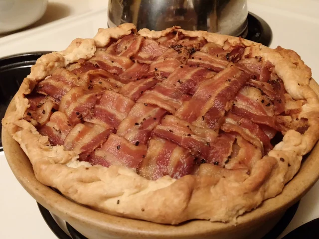

Beef and Bacon Pie

Description
This recipe is rich and savory, much closer to what we imagined when we read about the beef and bacon pies of Winterfell. For all that this is a relatively dense dish, the flavors are fairly light. The beef, bacon, onions, and herbs are all distinguishable, but don’t linger overlong on the palate. The result is a lovely meat pie that can be served hot or cold.
Serves 8
Ingredients
- 12 strips bacon
- 2 tablespoons unsalted butter
- 1 onion, diced
- 1 carrot, cut into small chunks
- 1/2 medium potato, cubed
- 1 1/2 pounds chuck steak or stew meat, cut small
- 2 tablespoons all-purpose flour
- 1 cup beef broth
- Salt and ground black pepper to taste
- Large pinch dried rosemary, or other savory herbs
- 1/2 batch Medieval Pastry Dough, or enough dough For a single-crust 9-inch pie, unbaked
Steps
- Preheat the oven to 400°F.
- Weave the bacon strips into a lattice, alternating each strip under and over the others. Make your lattice as wide as you can, reserving any extra strips of bacon. Place this woven bacon and any extra strips on a baking sheet with high edges to catch the bacon grease. Bake for 15 to 20 minutes, or until the bacon is crispy. Set aside to cool, but leave the oven on to bake the pie.
- Melt the butter in a pan over medium heat. Add the onion, carrot, and potato, and cook gently until the onion is soft and golden. Toss the beef with flour until each piece is covered. Add the beef to the vegetables and stir over low heat for 5 minutes, or until brown. Stir in any extra flour and cook for 1 minute longer.
- Add the broth, salt, pepper, and rosemary; mix well, and simmer for 10 minutes, until a gravy has formed. Let the meat mixture cool.
- Place your empty pie pan facedown on top of your lattice-work bacon. Using a sharp knife, cut around the pie pan until you have a circle of lattice. Crumble the leftover cooked bacon and add it to the filling.
- Roll out the pastry dough and line your pie pan, allowing any extra dough to drape over the edge of the pan. Pour the filling mixture into the shell. Cover with the bacon lattice, pinching off any excess, then fold the extra dough over the top of the bacon. Bake for about 40 minutes, or until the crust is golden.
Back to Home